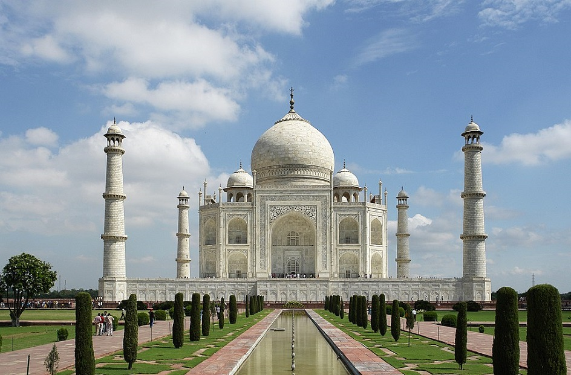
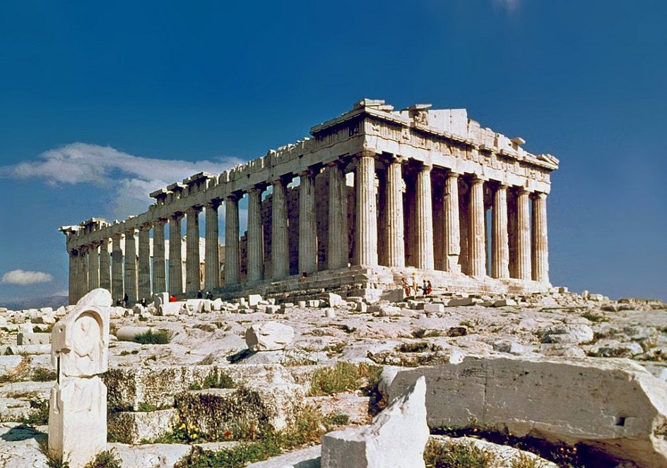
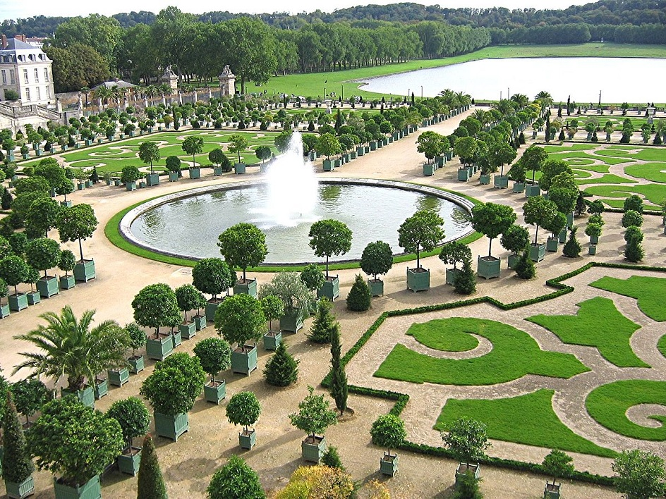

Что такое Архитектура?
Архитектура (от греческих αρχι — «главный» и τέκτων — «строитель») — это древнее искусство проектирования и
строительства разнообразных зданий и сооружений. Архитектура одновременно является сложной научной дисциплиной, которая
решает задачи создания пространственной среды для комфортного проживания людей. Построенные объекты не только должны
соответствовать прямому назначению и приносить пользу человеку. К зданиям и сооружениям также предъявляются
многочисленные технические и эстетические требования. Они должны быть прочными, долговечными и иметь красивый внешний
вид.

Особенности Архитектуры
Архитектура наряду с литературой относится к числу статических выразительных видов искусства. Уникальные архитектурные
шедевры прошлых эпох выполняют в наши дни, в первую очередь, эстетическую функцию. Лучшие образцы зодчества вместе с картинами и скульптурами составляют основу мирового художественного наследия
человечества. На содержание и реставрацию старинных архитектурных объектов государственные структуры и богатые меценаты
ежегодно выделяют огромные средства.

История развития и основные стили архитектуры
История развития архитектуры охватывает огромный период времени длительностью более 8 000 лет. Обнаруженные археологами
развалины самых древних архитектурных сооружений эпохи неолита датированы 60 столетием до нашей эры. На протяжении
многих тысячелетий в разных уголках земли возникали, развивались и исчезали древние цивилизации. Каждая из них вносила
важный вклад в развитие искусства строительства зданий и сооружений.